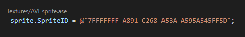

VSCode Extension
The engine comes with a simple VSCode extension for making development in the Chroma Engine and Polychrome Editor a little easier.
Installation
- Requires VSCode to be installed
- In the Polychrome Editor, click Options > Install VSCode Extension.
Note: If this option does not exist, the engine could not detect VSCode in the PATH. Either add to the path, or reinstall.
Features
Asset Code Lens

This allows the user to view the name/path of the asset when referencing a GUID. Clicking on the path will highlight it in the VSCode Explorer.
Asset GUID Completion

Typing the
@character will provide asset path completion suggestions. HittingEnterwill substitute the selected path with it's GUID.